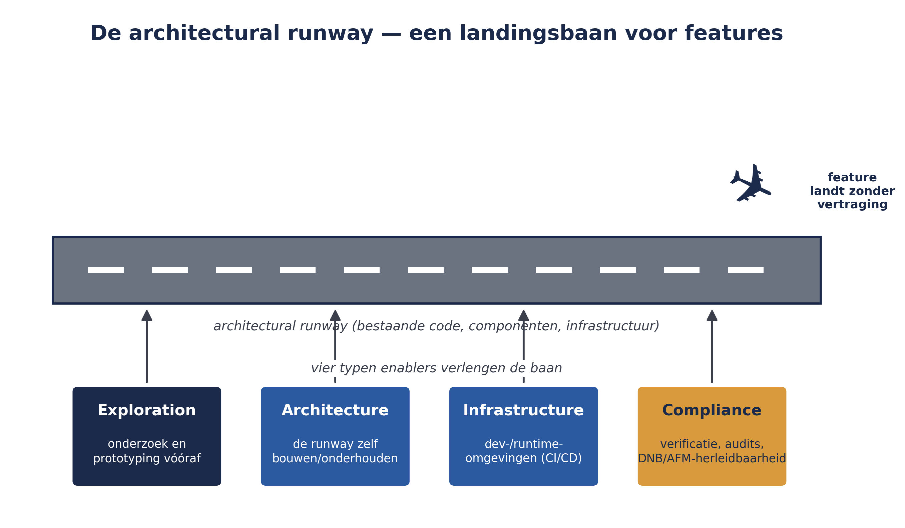

De architectural runway
⏱ 15 minDit deel verdiept de rol van System Architect/Engineering (deel 4) en Solution Architect/Engineering (deel 11): niet als een van vier ART-niveau rollen in het algemeen, maar specifiek gericht op wat architectuur binnen SAFe betekent. Centraal staat de architectural runway — een beeld dat u door de rest van deze cursus heen al terloops bent tegengekomen (deel 4, deel 6) en dat hier expliciet wordt uitgewerkt.
De architectural runway is de bestaande code, componenten, technische infrastructuur en architectuur die al aanwezig zijn om aankomende business-features zonder vertraging te laten "landen". De metafoor is bewust gekozen: een vliegtuig heeft een startbaan van voldoende lengte nodig voordat het veilig kan opstijgen; een feature heeft voldoende technische fundering nodig voordat een team hem zonder vertraging kan bouwen. Een ART die zijn runway laat "opraken" — waarbij features steeds moeten wachten op architectuur die er nog niet is — verliest voorspelbaarheid en snelheid.
Dit is direct verbonden met wat u in deel 6 leerde over enablers: het werk dat de architectural runway verlengt. In dit deel gaat u dieper op de vier typen enablers in:
- Exploration-enablers — onderzoek, prototyping en andere activiteiten om klant- of technische behoeften beter te begrijpen, vóórdat er gebouwd wordt.
- Architecture-enablers — het bouwen en onderhouden van de architectural runway zelf: schaalbaarheid, prestaties, onderhoudbaarheid.
- Infrastructure-enablers — de ontwikkel- en runtimeomgevingen die het bouwen, testen, deployen en beheren van oplossingen ondersteunen (denk aan CI/CD-pijplijnen uit deel 15).
- Compliance-enablers — activiteiten gericht op verificatie, validatie, audits en beleidsautomatisering.
Voor Meridiaan is dit laatste type bijzonder relevant: een compliance-enabler zou bijvoorbeeld het opzetten van geautomatiseerde audit-logging voor mutaties kunnen zijn, zodat elke wijziging in een pensioenregeling herleidbaar is voor DNB/AFM-toezicht — een thema dat in niveau 3 van deze cursus terugkomt.

Uit Werkboek deel 16, Zelftoets vraag 1 en Opdracht 16.2